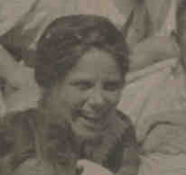

 Emma McWILLIAMS (Abt 1890-) |
Emma McWILLIAMS
• Census: 1930, 5 Apr 1930, Donora, Washington, PA. 2 • Census: 1940, 2 Apr 1940, Donora, Washington, PA. 3 Emma married John KOELSCH about 1906.1 2 Emma next married Michael Joseph ORIENT, son of Adam ORIENT and Anna FRANCZ. (Michael Joseph ORIENT was born on 5 Aug 1879 in Ober-Metzenseifen, Austria-Hungary,4 5 died in 1945 6 and was buried in Braddock Cemetery, Braddock, Allegheny, PA 6.) |
1 Gretchen Barrows, E-mail to Thomas Hoey (20 Sep 2001).
2 Pennsylvania, Washington County, 1930 U.S. Census, Population Schedule (Washington, D.C., National Archives and Records Administration), ED 63-54, Sheet 5, Line 39.
3 Pennsylvania, Washington County, 1940 U.S. Census, Population Schedule (Washington, D.C., National Archives and Records Administration), ED 63-58, Sheet 13, Line 73.
4 St. Mary Magdalene Parish Register, Christening Records, 1807-1886 (Ober Metzenseifen, Slovakia (LDS Film 2010722)).
5 Sr. Beatrice Orient, The Orient Family Tree (unpublished) (Pittsburgh, PA, Aug 1997).
6 Nancy and Tom McAdams, Cemetery Headstone, Braddock Cemetery (Pittsburgh, PA, May 2000, http://www.geocities.com/tandnmca/cemindex.html).